Prisma
Alles für den ersten Eintrag in Google Play (Paket ch.bonomo.prisma). Stand 18.11.2026, Ticket 10 des Umbaus.
Hochladen
- App-Bundle:
android/app/build/outputs/bundle/release/app-release.aab(signiert mit dem Upload-Schlüssel; in der Play Console «Play App Signing» annehmen). - Zum Ausprobieren auf dem Handy:
android/app/build/outputs/apk/release/app-release.apk. - Version 1.0 (Versionscode 1). Für jedes weitere Bundle
android.versionCodeinpackage.jsonum 1 erhöhen. - Android 7 und neuer (API 24), Ziel-API 36.
Eintrag auf Deutsch
Prisma – Licht-Puzzle
Lenke Licht mit Spiegeln und Prismen und wecke die Sterne des Kleinen Wagens.
Hoch in den Bergen liegt ein kleines Dorf. Jeden Abend sucht Noa dort den Polarstern und will ihm mit der Taschenlampe ein Zeichen geben. Aber die Sterne des Kleinen Wagens schlafen, und ohne sie verliert sich das Licht im Dunkeln. Prisma ist ein ruhiges 3D-Licht-Puzzle. Du drehst Spiegel, Prismen und Kombinatoren, bis jeder Kristall Licht in seiner Farbe bekommt. Ein Prisma teilt weisses Licht in Rot, Grün und Blau, ein Filter lässt nur seine eigene Farbe durch, und wo Rot und Blau zusammen ankommen, wird Magenta daraus. Mit den Glühwürmchen bringst du das Licht von Ort zu Ort: vom Bergwald ans Meer, durch die Wüste und über den Vulkan bis zu den Planeten und Sternen. Jede Welt weckt einen Stern, und am Ende antwortet der Polarstern. • 240 Level in vier Graden, von leicht bis sehr schwer • Sechs Welten, jede mit eigenem Himmel • Vier Übungen im Dorf zeigen Schritt für Schritt, wie das Licht läuft • Jedes gelöste Level klingt in den Farben seines Lichts • Kein Zeitdruck, keine Leben, keine Werbung • Läuft ohne Internet • Deutsch und Englisch
Die erste Fassung von Prisma für Android.
Store listing in English
Prisma – Light Puzzle
Guide light with mirrors and prisms and wake the stars of the Little Dipper.
High up in the mountains there is a little village. Every evening Noa looks for the North Star there and wants to send it a signal with a flashlight. But the stars of the Little Dipper are asleep, and without them the light gets lost in the dark.
Prisma is a calm 3D light puzzle. You turn mirrors, prisms and combiners until every crystal receives light in its own color. A prism splits white light into red, green and blue, a filter lets only its own color through, and where red and blue arrive together, they make magenta.
Together with the fireflies you carry the light from place to place: from the forest to the sea, across the desert and the volcano, all the way to the planets and the stars. Each world wakes one star, and at the end the North Star answers.
• 240 levels across four difficulty settings, from easy to very hard
• Six worlds, each with its own sky
• Four practice rounds in the village show step by step how light travels
• Every solved level rings out in the colors of its light
• No time pressure, no lives, no ads
• Plays offline
• English and German
The first version of Prisma for Android.
Bilder
Je Sprache acht Bildschirmfotos für Handys (1080 × 1920, JPEG), dieselben Szenen auf Deutsch und Englisch, in dieser Reihenfolge hochladen. Dazu die Feature-Grafik (1024 × 500) je Sprache und das App-Symbol (512 × 512, für beide gleich). Für Tablets verlangt Google keine eigenen Bilder.
Deutsch
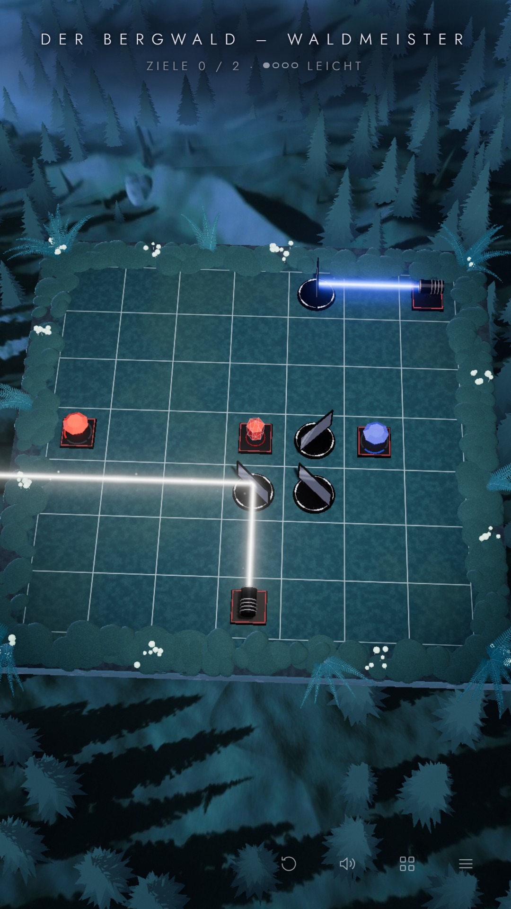
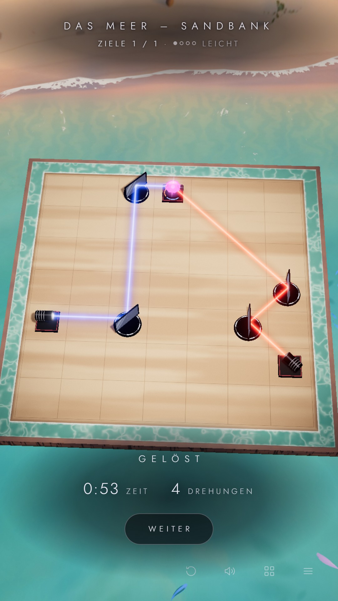
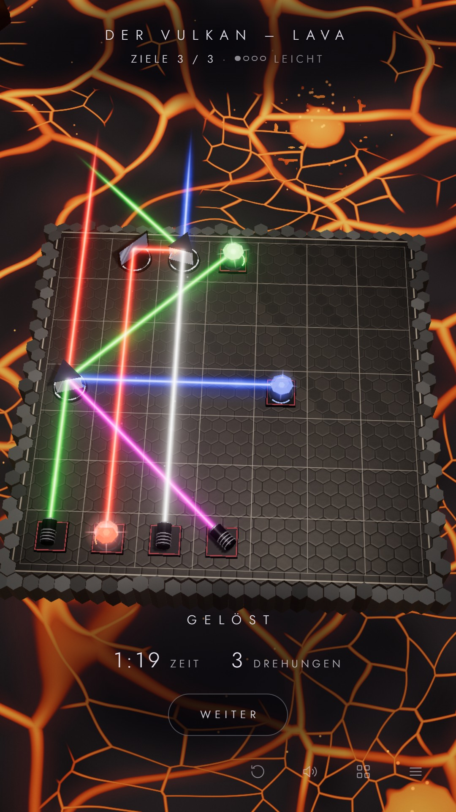
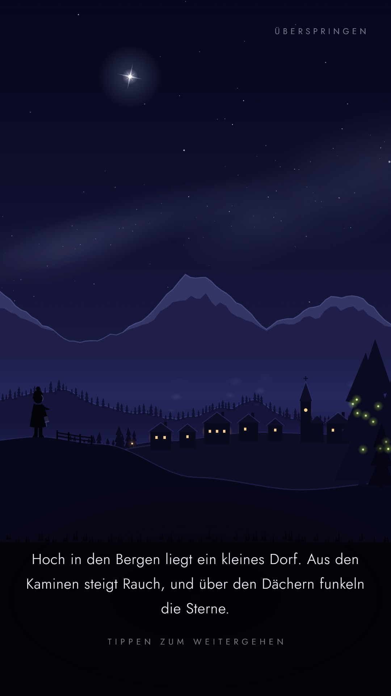
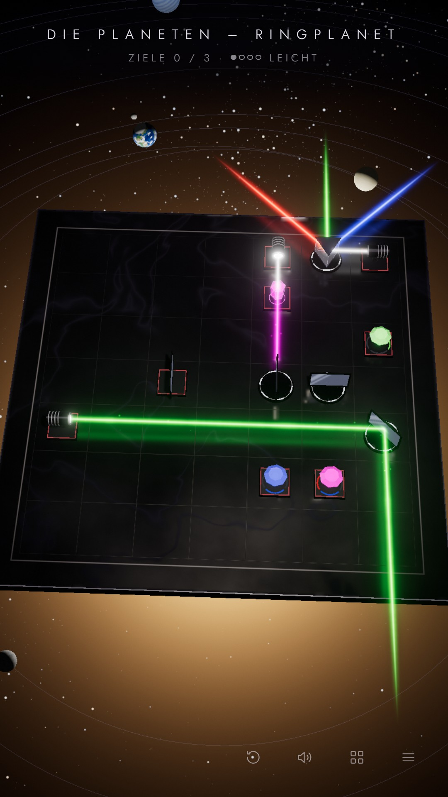
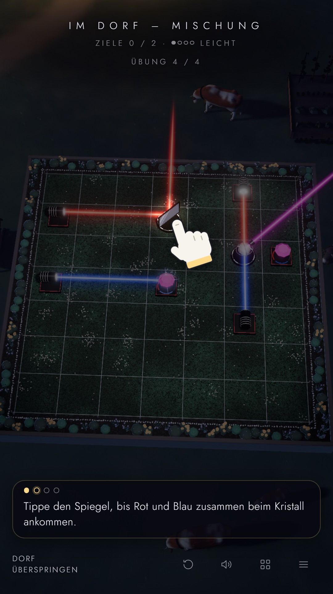
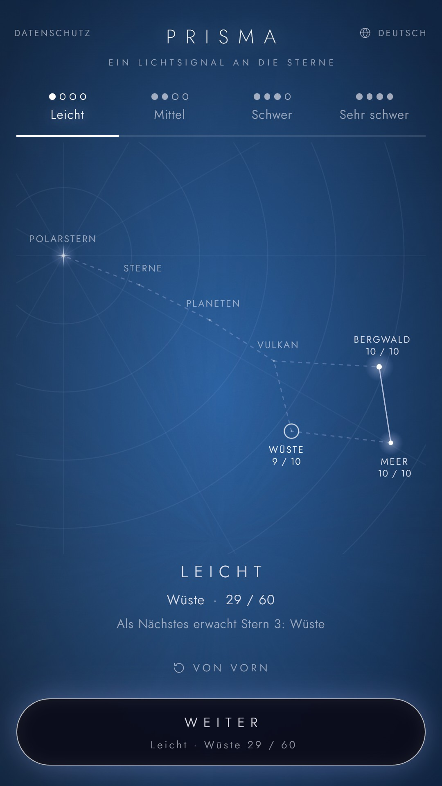
Feature-Grafik Deutsch
English
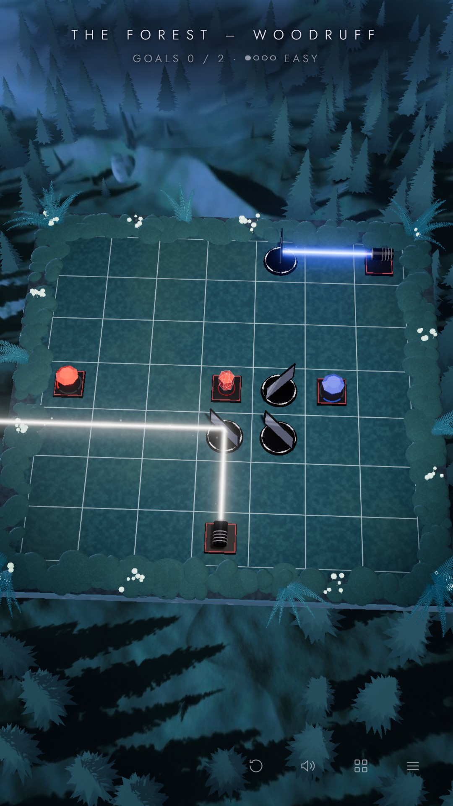
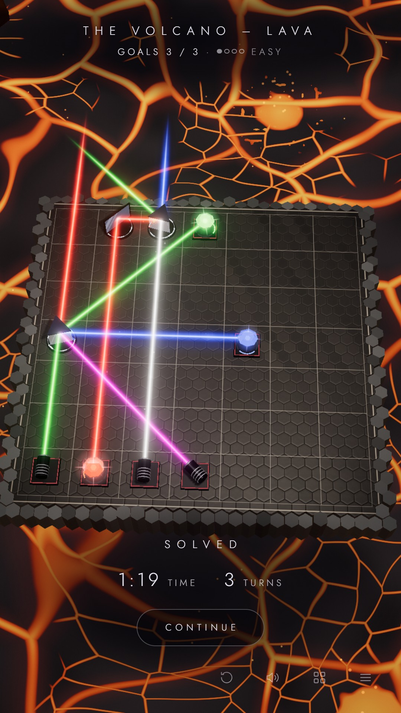
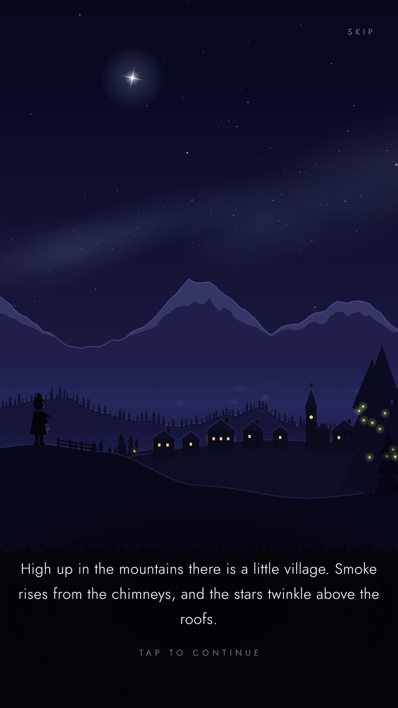
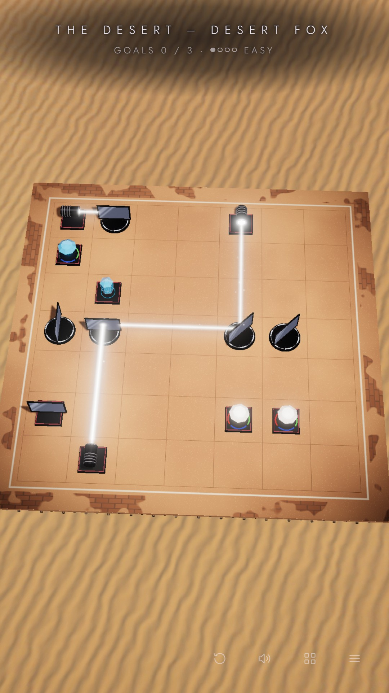
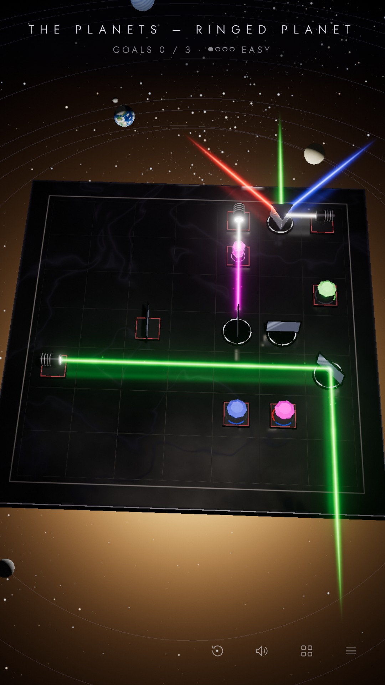
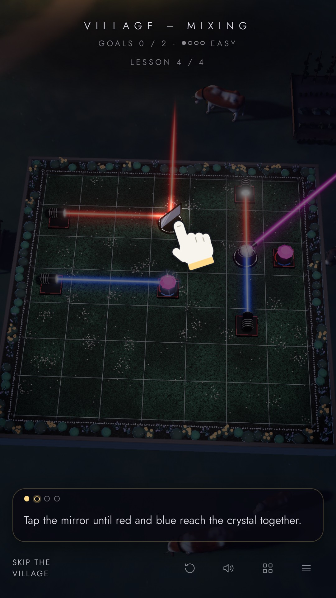
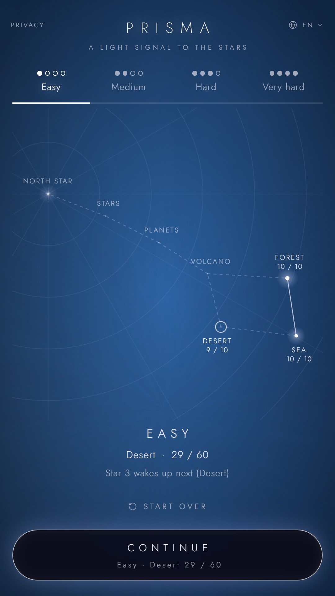
Feature graphic English
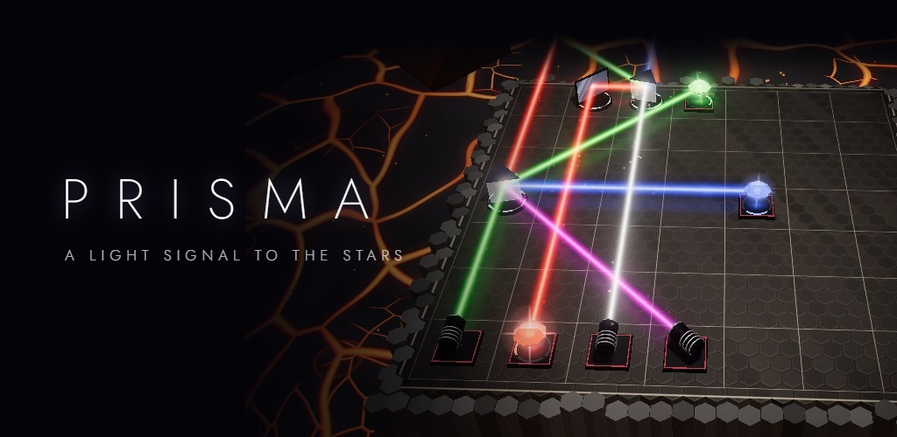
App-Symbol
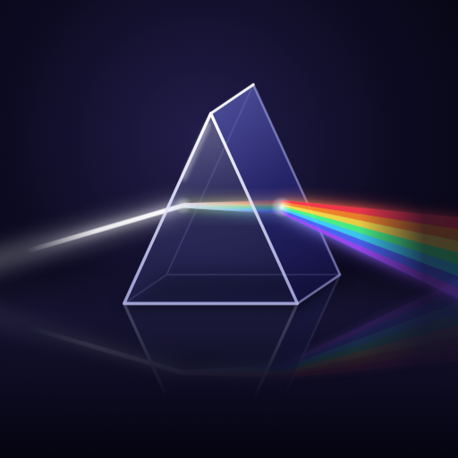
Neu machen: tests/bildvergleich.mjs --gpu --store <ordner> (alle Szenen beider Sprachen, gut 9 min), dann
die Auswahl nach store/de/ und store/en/ kopieren; Feature-Grafik (JPEG, Google nimmt sie nicht mit Alphakanal) mit tools/store-grafik.mjs
aus grafik-welt-4-nach.jpg, das Symbol mit tools/app-icons.mjs.
Angaben in der Play Console
| Feld | Antwort |
|---|---|
| App oder Spiel | Spiel, kostenlos |
| Kategorie | Puzzle (Tags etwa: Logikrätsel, Entspannung, Einzelspieler, Offline) |
| Standardsprache | Deutsch (de-DE); Übersetzung Englisch (en-US) mit den Texten oben |
| E-Mail-Adresse (Kontakt) | bonomo.alessandro@yahoo.de |
| Website (freiwillig) | https://bonomoalessandro.github.io/Prisma/ |
| Datenschutzerklärung | https://bonomoalessandro.github.io/Prisma/datenschutz.html (Deutsch und Englisch auf einer Seite; im Spiel unter «Datenschutz» im Menü) |
| App-Zugriff | Alle Funktionen ohne Anmeldung und ohne besondere Zugangsdaten verfügbar |
| Werbung | Nein, die App enthält keine Werbung |
| Käufe in der App | Keine |
| Zielgruppe | Entscheidet der Nutzer. Vorschlag: 13 Jahre und älter. Wer auch Kinder unter 13 wählt, fällt unter die Richtlinie für Familien (strengere Prüfung; die App erhebt nichts, das wäre also möglich, braucht aber mehr Angaben). |
| Behörden-, Finanz-, Gesundheits-, Nachrichten-App | Nein |
Datensicherheit
| Frage | Antwort |
|---|---|
| Erhebt oder teilt die App Nutzerdaten der verlangten Typen? | Nein. Der Spielstand liegt nur auf dem Gerät (im Speicher der App) und verlässt es nicht; kein Konto, keine Analyse, keine Werbung, keine Absturzberichte. |
| Folgefragen (Verschlüsselung, Löschen) | Entfallen mit «Nein». Gelöscht wird der Spielstand mit der App oder über «Von vorn» im Menü. |
| Berechtigungen | Nur INTERNET (Vorgabe von Capacitor; das Spiel lädt nichts aus dem Netz, der Link «Datenschutz» öffnet den Browser) |
Inhaltseinstufung (Fragebogen der IARC)
| Frage | Antwort |
|---|---|
| Kategorie | Spiel (Puzzle, Gelegenheitsspiel) |
| Gewalt, Blut, Angst | Nein |
| Sexuelle Inhalte, Nacktheit | Nein |
| Vulgäre Sprache | Nein |
| Drogen, Alkohol, Tabak | Nein |
| Glücksspiel, simuliertes Glücksspiel | Nein |
| Austausch zwischen Spielern (Chat, Inhalte teilen) | Nein |
| Teilt den Standort | Nein |
| Digitale Käufe | Nein |
| Zugang zum offenen Internet in der App | Nein (nur der Link zur Datenschutzerklärung, im Browser des Geräts) |
| Erwartete Einstufung | PEGI 3, USK ab 0, ESRB Everyone, IARC 3+ |